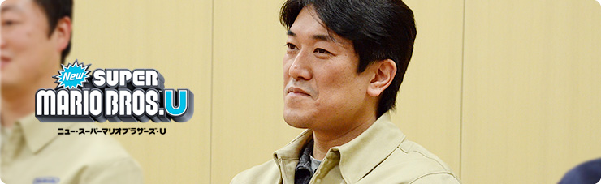
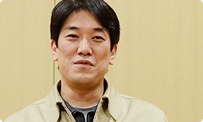
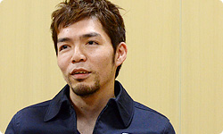

<div class="l-category-local-header">
<div class="category-local-header">
<div class="category-local-heading"><span>社長が訊く</span>
<div class="category-local-sub">IWATA ASKS


<div class="l-soft-topic-path is-block">
<div class="l-soft-topic-path-inner">
<div class="soft-topic-path">
<ul class="topic-path"><li class="topic-path-item"><span>『Wii U』 New スーパーマリオブラザーズ U篇</span></li></ul>


<div id="page-container">
<header class="interviewheader">
<h2 class="interviewheader__ttl"><span class="subtext">社長が訊く</span>『Wii U』</h2>

</header>
<div class="tabmenu-container">
<p class="tabmenu__ttl">シリーズ一覧
<ul class="tabmenu__body tabnum12">
<li class="tabmenu__item tab1">本体 篇</li>
<li class="tabmenu__item tab2">Wii U GamePad 篇</li>
<li class="tabmenu__item tab3">Miiverse プロデュース 篇</li>
<li class="tabmenu__item tab4">Miiverse 開発スタッフ 篇</li>
<li class="tabmenu__item tab5">インターネットブラウザー 篇</li>
<li class="tabmenu__item tab6">Wii U Chat 篇</li>
<li class="tabmenu__item tab7">New スーパーマリオブラザーズ U 篇</li>
<li class="tabmenu__item tab8">ZombiU（ゾンビU） 篇</li>
<li class="tabmenu__item tab9">Nintendo×JOYSOUND Wii カラオケ U 篇</li>
<li class="tabmenu__item tab10">Nintendo Land 篇</li>
<li class="tabmenu__item tab11">Nintendo TVii 篇</li>
<li class="tabmenu__item tab12">Wii Street U powered by Google 篇</li>
</ul>

<div class="hero-container">
<div class="hero__img">

<div class="interviewsubheader">
<div class="interviewsubheader__ttl"><h2>New スーパーマリオブラザーズ U篇</h2>

<div class="pageindex-container">
<p class="pageindex__ttl">目次
<ul class="pageindex__body">
<li class="pageindex__item">1. 「何を新しくするの？」</li>
<li class="pageindex__item">2. 「もったいない」</li>
<li class="pageindex__item">3. “ノーバディプレイ”</li>
<li class="pageindex__item active">4. マップをひとつに</li>
<li class="pageindex__item">5. 手元で投稿を読む</li>
<li class="pageindex__item">6. 「いろんなものをタッチしてほしい」</li>
</ul>

<div class="interview-container">
<h3 class="interview__ttl">4. マップをひとつに</h3>

岩田
: 新しいモードに<br>「ブーストモード」というのがありますけど、<br>これはどうやってできたんですか？


岩本
: 前作で「フリーモード」というのがあって、<br>ふつうのコースを気軽に遊べるモードでした。<br>「今回もそれに近いものを入れよう」というのは<br>当初から決まっていたんです。<br>そこで、特定のコースをつないで、<br>ひととおり遊べるようにしてみたんですけど、<br>あまり盛り上がらなかったんです。


岩田
: 淡々とした遊びになっちゃうんですね。


岩本
: そうなんです。<br>「ストーリーモードで遊びこんだコースを<br>　ただ遊ぶだけでは物足りない」<br>という意見が多かったんです。<br>そこで、コースを強制スクロールさせて、<br>「コインを取れば取るほどスピードが速くなる」<br>というルールをつけてみました。<br>最初はゆっくりなんですけど、<br>「だんだん速くなっていく」ので、<br>「どんどん難しくなる」というジレンマがあって、<br>それが『マリオ』の遊びに合っていたんです。


岩田
: なるほど。


岩本
: それにバディプレイで遊んだとき、<br>
<span>タイミングよくブロックに乗ると<br>コインが出る</span>んですけど、<br>そのコインを取ることでもスピードが速くなるので、<br>ひとりで遊んだときや、ふたりで遊んだとき、<br>バディプレイで遊んだときで、<br>戦略が変わってくるんです。




岩田
: どのように戦略が変わるんですか？


岩本
: ふたりで遊ぶときは<br>「上のコインを取ってくれ、おれは下を取る」<br>みたいに、声をかけ合いながら遊ぶことになります。<br>バディプレイのときは<br>ブロックに乗るとコインが吐き出されるので、<br>後ろの人が追いかけて回収していくとか、<br>役割を分担してコインを集めていきます。<br>最終的には、早くゴールすることを目的にして、<br>タイムアタックモードみたいな感じになりました。


岩田
: まるで「レースゲーム」ですね。


岩本
: そうですね。<br>一風変わったレースゲームですけど（笑）。


岩田
: だから、今回の『NewマリオU』は<br>アクションゲームなんですが、<br>パズルゲームも、レースゲームの要素も<br>味わえるんですね。


足助
: そうですね。<br>「１本で３度おいしい」<br>みたいな感じです（笑）。


岩田
: 3DSの『Newマリオ2』は<br>「限られた時間のなかでたくさんのコインを取る」<br>というのが目的でしたけど、<br>『NewマリオU』のほうは<br>「コインを取ったらスクロールが速くなって、<br>　タイムを短縮できる」<br>という違いがあって面白いですね。


竹本
: はい。そのアイデアのおかげで、<br>いままで放っておいたコインも<br>なんとか取りにいこうとしますし。<br>しかも、バディプレイがそこに活きると思います。


岩田
: ちなみに、ブロックに乗ったら<br>コインが出てくるようにしたのは、<br>「ブーストモード」のためではないんですよね？


竹本
: そうです。<br>もともとはうまくブロックを出したら、<br>「ほめてあげよう」ということだったんです。


岩田
: ああ、それが別の意味で役立ったわけですね。


竹本
: そうです。<br>ちょうどうまく結びつきました。


岩田
: きれいにパチンとハマった感じがしますね。


竹本
: はい。


岩田
: そのほかには、どんな新しいことを入れたんですか？


竹本
: ストーリーモードでいうと、<br>
<span>コースセレクト画面で<br>たくさんのワールドをひとつにつなげた</span>のが<br>いちばん大きいかなと思います。


岩田
: 遊んだ人から<br>「今回は冒険の目的がハッキリわかるようになった」<br>という声を聞きましたよ。


竹本
: そうですね。最終目的地まで、<br>すべての地形を見渡すこともできますし。


岩田
: でも、どうしてバラバラだったマップを<br>ひとつにつなげようと思ったんですか？


竹本
: ファミコンの『マリオ３』（※10）のときに、<br>すごろくのようなワールドマップになりましたよね。

※10『マリオ３』＝『スーパーマリオブラザーズ３』。１９８８年１０月に、ファミコン用ソフトとして発売されたアクションゲーム。


岩田
: ああ、あれは衝撃でしたよね。


竹本
: それを見て「すごいなあ」と思ったんです。<br>それがスーパーファミコンの<br>『マリオワールド』（※11）になると、<br>全部がつながっていて、<br>コースが単なる「コース」ではなく、<br>「その場所」という感じになって、<br>冒険をしながら、どんどん、<br>先に進んでいる感じがしたんです。





※11『マリオワールド』＝『スーパーマリオワールド』。スーパーファミコンと同時発売されたアクションゲーム。１９９０年１１月発売。


岩田
: ワクワクしたんですね。


竹本
: はい、すごく感動しました。<br>僕の記憶にはすごく残っていて・・・。


岩田
: それで今回、広大なワールドを<br>ひとつにつなぐことにしたわけですね。


竹本
: そうです。２０年以上前に、<br>自分がワクワクしたマップを<br>今回のWii Uの最新技術を使って、<br>「大きく進化させてみたい」と思いました。


<li class="pagination-prev"><span>3. “ノーバディプレイ”</span></li>
<li class="pagination-next"><span>5. 手元で投稿を読む</span></li>
</ul>
<div class="listbtn-container">
<p class="listbtn__item">社長が訊く 一覧

